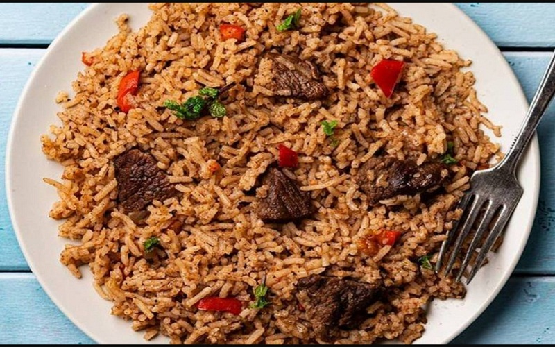
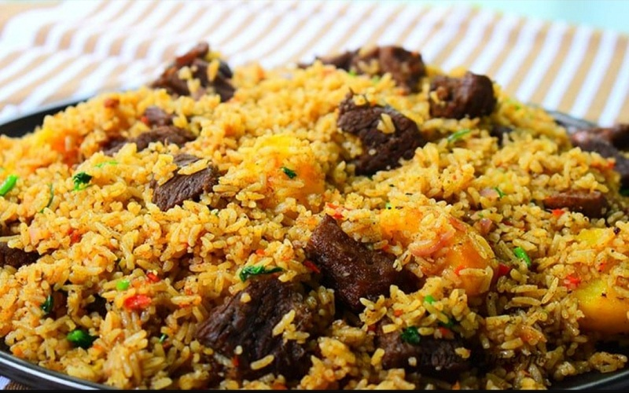
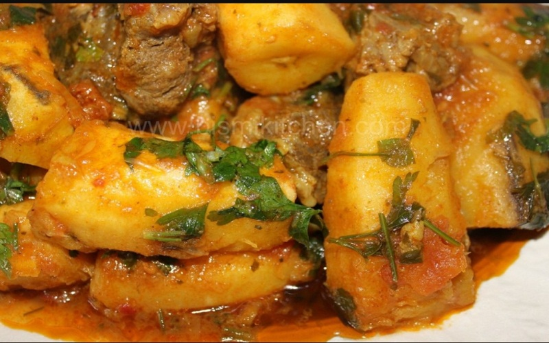
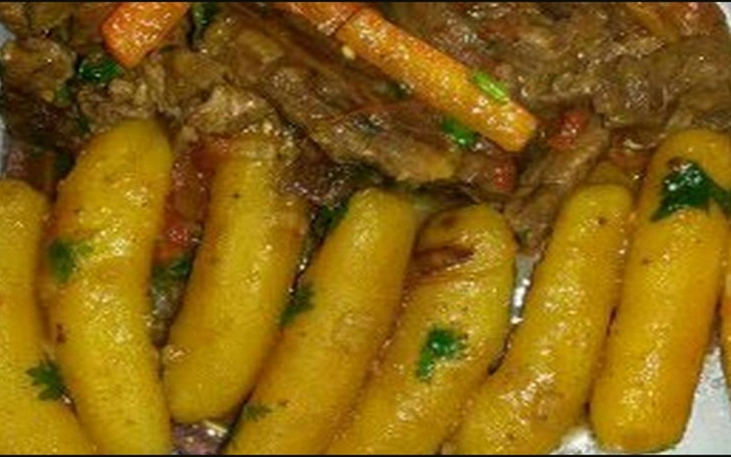
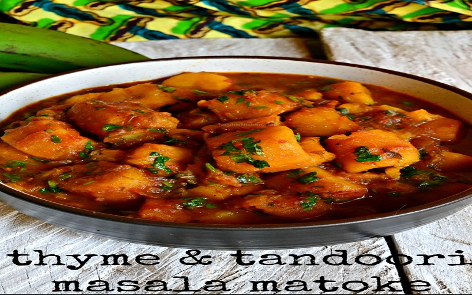
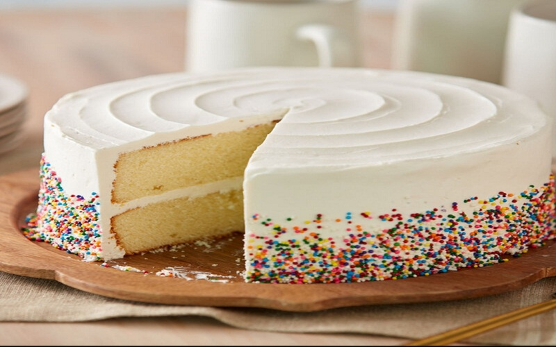
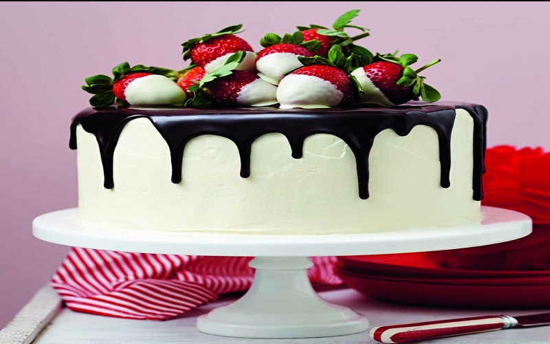
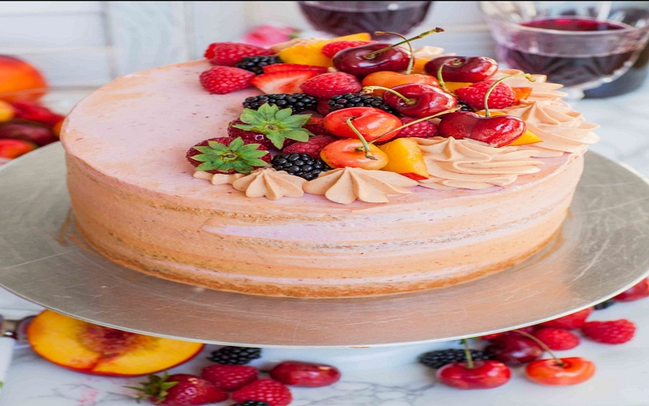

Our Main service is to provide procedures on how to prepare and cook certain kinds of food
Our Gallery

1

2
3

1

2

3

1

2

3
note
PILAU MASALA AND PILAU BEEF
×
Ingredients for 8 Serving
1/4 cup vegetables oil(60ml)
2 medium red onions,thinly sliced
4 cloves garlic,minced
2 tablespoons ginger,minced
1 serrano chile,finely chopped
1 tablespoon pilau masala
2 beef stock cubes
1 cinnamon stick
1/4 cup fresh cilantro,roughly chopped(10g)
1 lb beef sirloin,cubed(455g)
3 roma tomatoes, diced
1 lb potato,waxy,peeled and cut into 1 inch(2cm) chunkd(455g)
4 cups water(960ml)
2 cups basmati rice(400g)
×
Steps Required
1, Make the pilau masala: In a medium bowl, combine the cumin,paprika,cardamom, black pepper,
and cloves. Set a side.
2, Heat a large pot over medium-high heat. Add the oil and red onion and saute for 10-15 minutes, until ark brown.
3, Add the garlic,ginder, serrano chile, pilau masala, beef stock cubes, cinnamon stick and cilantro. Cook for 1-2 minutes,until fragment.
4, Add the beef and cook until browned, about 8 minutes.
5, Add the tomatoes and cook for 4-5 minutes, until the tomatoes have released their liquid
6, Add the potatoes and water. Bring to boil and cook for 10 minutes.
×
Dining
Ensure that the dining table is well aranged and cleaned.
Put the ready meal in the dishes.
Bring to the dining hall.
Serve and enjoy the delicacy.
MATOKE AND BEEF STEW
Matoke is a kenyan food that has an origin in Kissi lands. Matoke can be prepared with or without. Below here, is a preparation with beef stew;
Ingredients For 4 Serving
1 bunch bananas
500g beef, chopped into pieces and washed
3 tomatoes, chopped
1 onion, chopped
carrots, chopped and washed dhania
1 tablespoon salt
curry powder
cooking oil
Steps
1, Smear the oil on your hands and peel the bananas. The oil helps your hand not to get sticky liquids from the bananas.
2, Put the beef in a cooking pot with a pinch of salt and add one cup of water, then place over heat and cover.Then let it boil for 30 minutes till it is tender.
3, Drain the soup that is remaining and put a side. Preserve it for soup later. Add oil in the meat and heat as you stir to mix then add onion. Let the onions fry with the meat for 3 minutes and tomatoes and add tomatoes and carrots, stir to mix then cover to simmer until the tomatoes have soften.
4, Add the bananas to beef and stir. Add the preserved soup if not enough add some water with some salt, dhania and curry powder. Cover and let it simmer for 15 minutes or until the bananas are soft.
5, Remove from heat and serve
HOMEMADE CAKE RECIPE
This is simply type of cake that is normally prepared at home by individuals. It could be used as a surprise for BirthDay Party for a particular person in a family.
Homemade Cake
Ingredients Of Homemade Cake for 6 Serving
3 cup all purpose flour
1.5 cup powdered sugar
4 cup egg
1 cup butter
2 teaspoon baking soda
1 cup milk
2 teaspoon vanilla essential
Procedure for Baking a Hommemade cake
1, Cream together butter-sugar and then blend with beaten eggs.
2,Combine Flour mix and beaten eggs.
3,Bake the cake as per your convenience.
4,Cook for about 45 minutes.
5,Check with a knife or skewer if it is cooked and serve